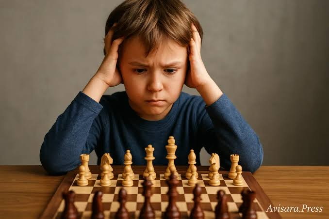
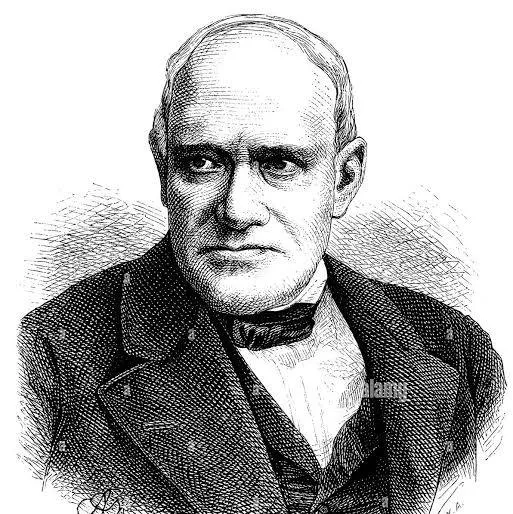

XADREZ UM JOGO QUE CRUZA SECULOS

Historia do Xadrez
Os primeiros jogadores notaveis
Ha registro de jogadores forte desde seculo XVII, como exemplo Gioacchino Greco, Nascimento 1 de janeiro de 1600, Itália Falecimento 1634 (idade 34 anos), América. E tambem um importante jogador no seculo XVIII, lembrado ate os dias de hoje pelas suas contribuições e nivel de jogo, o frances François-André Danican Philidor Nascimento 7 de setembro de 1726, Dreux, França Falecimento 31 de agosto de 1795 (idade 68 anos), Londres, Reino Unido
Mas foi no comeco do seculo XIX que foram surgindo muitos jogadores de elite, como Pierre-Charles Fournier de Saint-Amant
Nascimento 1797, França Falecimento 13 de dezembro de 1840 (idade 43 anos), Londres, Reino Unido
Alexander McDonnell
Nascimento 22 de maio de 1798, Belfast, Irlanda do Norte, Reino Unido
Falecimento 15 de setembro de 1835 (idade 37 anos), Londres, Reino Unido
e nao menos importante, o jogador que é conhecido por ser o primeiro campeao mundial nao oficial
Louis-Charles Mahé de La Bourdonnais
Nascimento 1797, França Falecimento 13 de dezembro de 1840 (idade 43 anos), Londres, Reino Unido
.Que venceu seu confronto contra o forte jogador irlandês ja citado, Alexander McDonnell em londres 1834

O primeiro grande destaque
Apos La Bourdonnais, quem venceu o torneio para campeao do mundial (lembrando que o titulo nao é reconnhecido como oficial) foi o britanico Howard Stauton vencendo de forma convincente seu match. Porem esses nomes, dentre os jogadores de suas epocas, nao sao tao relembrados quanto nomes como Adolf Anderssen e Paul Morphy.
Adolf Anderssen Nascimento 6 de julho de 1818, Breslávia, Polônia Falecimento 13 de março de 1879 (idade 60 anos), Reino da Prússia foi quem derrotou Howard Stauton, um grande jogador, porem Anderssen estava a frente de sua epoca, com o nivel de jogo incrivel, com o estilo de jogo agressivo e tatico, como era comun de sua epoca, porem Anderssen era ainda mais preciso e incisivo em seus lances, sendo um dos nome mais citados quando se trata dessa epoca, em mais adiante um aluno de Anderssen foi quem disputou o primeiro campeonato mundial oficial de xadrez, seu nome é Johannes Hermann Zukertort

O Apice da Era
Com certeza o jogador mais lembrado dessa epoca seja quem tirar a coroa do entao genial jogador Adolf Anderssen, foi o norte americano Paul Morphy Nascimento 22 de junho de 1837, Nova Orleans, Luisiana, EUA Falecimento 10 de julho de 1884 (idade 47 anos), Nova Orleans, Luisiana, EUA possuia todos os atributos de sua epoca no auge, agresividade nos lances e precisao de calculo, porem Morphy possuia um diferencial de todos os jogadores de sua epoca, ele entendia conceitos estrategicos que foram fundamentados anos depois, mostrando estar muito a frente ate dos jogadores de elite de sua epoca, tendo relatos de jogar a cega e comecando com desvantagem material propositalemente contra fortes jogadores,
Morphy teve um reinado curto, como estava muito a frente dos jogadores de sua epoca, ele nao se via interessado em continuar jogando torneios de xadrez , mesmo assim, ainda é lembrado pelos incriveis feitos, como por exemplo da vez que ganhou do forte jogador de sua epoca Johann Löwenthal ,nessa epoca Morphy tinha apenas doze anos de idade, mesmo novo ele mostrava grande nivel de jogo, vencendo com placar de sete vitorias, dois empates e duas derrotas


|
François-André Danican Philidor Nascimento
Foi o primeiro grande estrategista do xadrez moderno e o autor da famosa frase "os peões são a alma do xadrez |

|
Pierre-Charles Fournier de Saint-Amant
Foi um famoso enxadrista francês do século XIX, considerado o melhor jogador da França após a morte de La Bourdonnais |
|
Rudolf Spielmann
considerado o "mestre do ataque", era também conhecido como "o último cavaleiro do Gambito do Rei |

|
Joseph Henry Blackburne
Seu estilo agressivo e capacidade natural tática renderam-lhe o apelido de The Black Death |

|
O Xadrez eh bom para criancas
Para desenvolver o raciocinio logico e concentracao
E bom para Adultos e Idosos
Como exercicio mental e distracao para relaxamento